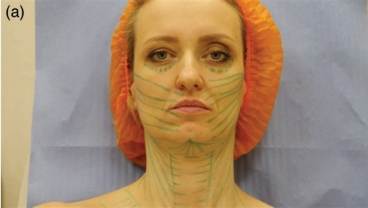
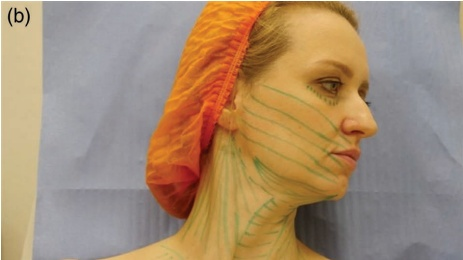
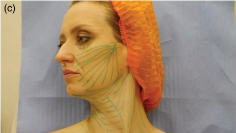
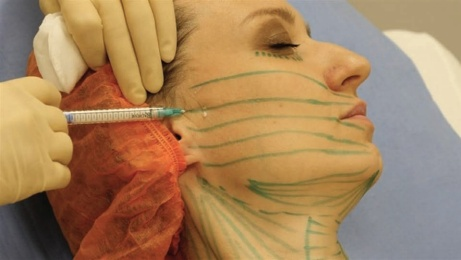
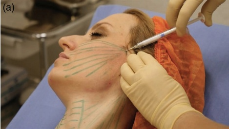
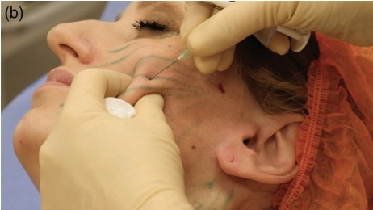
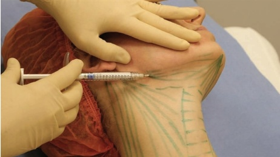
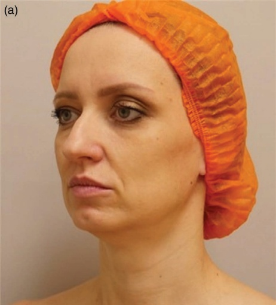
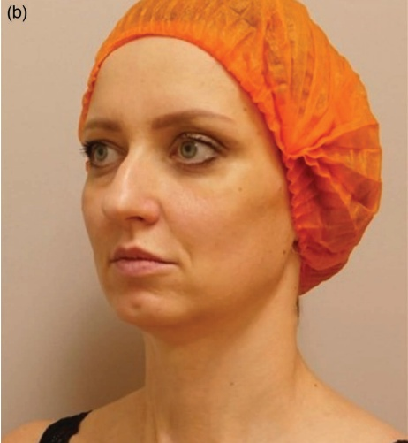

32 颈部、胸部和腹部：用于面颊、颈部及胸前区的 MesoCaHA
面部、颈部和腹部中层羟基磷灰石钙（CaHA）用于面颊、颈部和锁骨区域
YANA A. YUTSKOVSKAYA 和 ANNA DANIILOVNA LOKASTOVA
32.1 引言
在纠正面部、颈部和锁骨区域的年龄相关皮肤改变——表现为皮肤变薄、张力（turgor）和弹性下降以及松弛——时，本章的作者使用羟基磷灰石钙（CaHA）与0.9% NaCl（生理盐水）进行稀释。该技术旨在将产品维持在真皮层和皮下组织交界处的凝胶-溶胶（gel-sol）形式。该操作的目的是刺激新生胶原形成和组织提升。本章介绍了几种标记方案以及使用针头和钝性套管针给药稀释产品的多种方法。推荐的产品稀释比例如下：
面部 1:1
• 面部下区、颈部和锁骨区域 1:2
皮肤的衰老主要由于真皮层和皮下组织的萎缩改变所致。在此，我们将重点介绍参与皮肤衰老的几个主要因素，从糖胺聚糖（GAGs）开始。GAGs（其中包含透明质酸）是细胞外基质（ECM）中的分子，具有水合作用和填充空间的功能。它们可以通过糖基化与核心蛋白复合，形成如凡氏蛋白（versican）等蛋白多糖（PGs），已知参与弹性纤维新生 [1,2]。此外，皮肤还含有糖蛋白，特别是纤连蛋白（fibronectin），它在成纤维细胞与胶原纤维的相互作用中起作用。事实上，纤连蛋白是伤口愈合过程中成纤维细胞首先组装的基质，取代了临时的纤维蛋白血栓 [3]。最终，成纤维细胞沉积由纤连蛋白和胶原组成的复合材料，这有助于在肉芽组织形成过程中维持基质的结构完整性 [4]。衰老过程中，表层真皮层的胶原纤维变薄，深层真皮层试图作为代偿机制进行增厚，增加暂时性的密度。在后期，胶原纤维的断裂和溶解变得明显，并有分离的趋势 [5]。由纤连蛋白和弹性蛋白组成的真皮弹性网络也受到（光诱导性）衰老的影响。在内在衰老中，可见弹性皮肤的耗竭 [6]。相比之下，在光老化皮肤中，纤维发生降解和退化，逐渐积累（日光弹性过皮），[7]。在这两种情况下，皮下组织都起着主要作用，因为它与成纤维细胞一起参与伤口修复过程中的肉芽组织形成——这是再生过程的关键形态功能要素。
用生理盐水稀释的CaHA真皮填充剂是纠正年龄相关皮肤改变的有效且耐受性良好的方法，这些改变临床表现为皮肤厚度减小、张力和弹性下降、松弛和日光弹性过皮 [8]。该技术不是以凝胶（原始浓度）的形式给药，而是以凝胶-溶胶（用生理盐水稀释）的形式真皮下注射——在真皮层和皮下组织交界处。该操作的目的是刺激成纤维细胞的合成活性。
研究人员在动物模型中显示，皮肤中的胶原刺激可尽早发生，即四周 [9]。在人体内，观察到I型和III型胶原蛋白以及弹性蛋白的最大刺激出现在三到四个月后 [10]，注射九个月后，过程稳定，观察到的I型和III型胶原沉积比率为3:1 [11]。此外，治疗改善可记录至长达30个月 [12]。作者认为，本技术推荐用于年龄小于40岁的患者，以治疗皮肤真皮病和一次间隔九个月的临床松弛体征。对于年龄大于40岁的患者，建议每四个月进行一次。总而言之，由于胶原刺激是一个基因决定的过程，因此该疗法没有年龄限制。
32.2 中层羟基磷灰石钙（CaHA）技术
注射定位，参见图 32.1
32.2.1 分步技术
-
为确保操作舒适，建议使用局部麻醉剂（1–2%利多卡因）。封闭时间为40分钟。
-
标记面部中下部、颈部和锁骨区域（图 32.1）。在这种情况下，有几种注射技术方案。使用锐针时，注射应沿着皮肤张力线（Langer线）进行。使用钝性套管针时，首选的技术是扇形技术。



-
为制备 CaHA 稀释液，我们推荐的比例为 CaHA 与生理盐水溶液的 1:1 和 1:2。
-
在每组注射前，必须将稀释后的产品充分混匀（5–10 次），并转移至注射器中进行注射，因为其颗粒可能会沉淀并在注射器壁上沉积。
-
所得的稀释后 CaHA 通过向面部中下三分之一区域进行回行线性层次的真皮下注射（图 32.2）。注射应沿着从外周到中心、从上到下的均匀线条进行。该



锐针以斜面朝上，插入至最小角度到达皮肤表面并进行真皮下注射。无法看到钢针或钝性套管针的体身，但可以观察到牵拉过程。
- 在颧弓中点、离发际线前方 1 cm 处，使用 22G、70 mm 的钝性套管针刺破皮肤。采用矢量法（扇形技术）进行真皮下注射（图 32.3）。各矢量之间的距离应为 0.5–0.7 mm。

-
从颧骨下缘进行额外的穿刺，并向面部两侧各注射 1.5 mL 稀释后的产品。
-
在颏下区，建议的稀释比例为 1:2（将 1.5 mL CaHA 与 3 mL 生理盐水混合）。从颈部三角区外侧角和颏下韧带顶点的投影点进行穿刺（图 32.4）。使用 22G、70 mm 的钝性套管针，向每个点注射 0.5 mL 稀释后的产品。
-
在颈部，使用 CaHA 与生理盐水按 1:2 进行稀释（将 1.5 mL CaHA 与 3 mL 生理盐水混合）。在肩胛-气管三角区，使用锐针以线性逆行技术给药稀释后的产品。
-
在颈动脉三角区、剑突-乳突区域，推荐使用 22G、70 mm 的钝性套管针进行操作。钝性套管针的植入点位于颈动脉三角区的上角，注射采用扇形技术。
-
在大的锁骨上窝，通过锐针从中心向外周进行注射，采用逆行线性层次。
-
在胸部区域，可以使用 22G、50 mm 的钝性套管针和锐针进行操作。注入产品的稀释比例和体积与颈部使用的方法相似。
有关 MesoCaHA 可视化的最终结果和技术，请参见图 32.5。
32.3 术后护理
术后，建议使用抗炎（或富含山金车）软膏进行主动按摩，以更好地分布注射材料。术后出现不规则的现象是可接受的；但是，出现模糊外观则不能接受（可见由于过度


为达到最快的再生效果，建议使用具有额外镇静和修复作用的促再生霜。
参考文献
[1] B. Bode-Lesniewska et al., “Distribution of the large aggregating proteoglycan versican in adult human tissues,” J Histochem Cytochem, vol. 44, no. 4, pp. 303–312, 1996.
[2] M. A. Ruiz Martínez et al., “Role of proteoglycans on skin ageing: A review,” Int J Cosmet Sci, vol. 42, no. 6, pp. 529–535, 2020.
[3] K. S. Midwood et al., “Tissue repair and the dynamics of the extracellular matrix,” Int J Biochem Cell Biol, vol. 36, no. 6, pp. 1031–1037, 2004.
[4] K. E. Kubow et al., “Mechanical forces regulate the interactions of fibronectin and collagen I in extracellular matrix,” Nat Commun, vol. 6, no. 1, pp. 1–11, 2015.
[5] M. Bonta et al., “The process of ageing reflected by histological changes in the skin,” Romanian J Morphol Embryol, vol. 54, no. Suppl 3, pp. 797–804, 2013.
[6] M. El-Domyati et al., “Intrinsic aging vs. photoaging: A comparative histopathological, immunohistochemical, and ultrastructural study of skin,” Exp Dermatol, vol. 11, no. 5, pp. 398–405, 2002.
[7] S. H. Shin et al., “Skin aging from mechanisms to interventions: Focusing on dermal aging,” Front Physiol, vol. 14, 2023.
[8] T. Pavicic, “Calcium hydroxylapatite filler: An overview of safety and tolerability,” J Drugs Dermatol, vol. 12, no. 9, pp. 996–1002, 2013.
[9] K. M. Coleman et al., “Neocollagenesis after injection of calcium hydroxylapatite composition in a canine model,” Dermatol Surg, vol. 34, no. Suppl 1, 2008.
[10] Y. Yutskovskaya et al., “A randomized, split-face, histomorphologic study comparing a volumetric calcium hydroxylapatite and a hyaluronic acid-based dermal filler,” J Drugs Dermatol, vol. 13, no. 9, pp. 1047–1052, 2014.
[11] Y. A. Yutskovskaya, E. A. Kogan, "Improved neocollagenesis and skin mechanical properties after injection of diluted calcium hydroxylapatite in the neck and décolletage: A pilot study," J Drugs Dermatol, vol. 16, no. 1, pp. 68–74, 2017.
[12] M. H. Graivier et al., “Calcium hydroxylapatite (Radiesse) for correction of the mid- and lower face: Consensus recommendations,” Plast Reconstr Surg, vol. 120, no. Suppl 6, 2007.